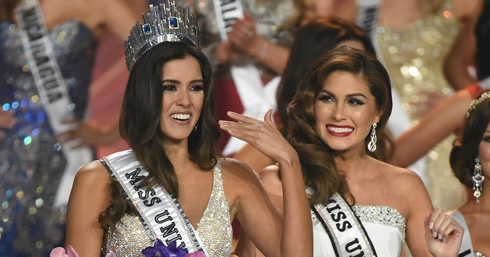

Miss universo 2014
63va edición del certamen de belleza de Miss Universo
Resultados
Finalistas
Semifinalistas (Top 10)
Cuatrofinalistas (Top 15)
Premios especiales
Propietario
Canales de televisión
Sede final
Sede operativa
Fecha
Presentadores
Entretenimiento
Número de participantes
Clasificación
Retiros
Regresos
Logo oficial de la edición
Concursantes
| País | Concursante | Edad | Ciudad |
|---|---|---|---|